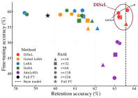
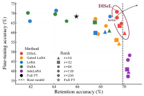
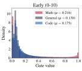
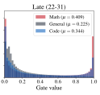
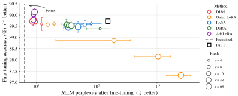
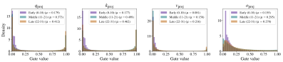

2026
Learning When
to Adapt
Under review[Paper]
DISeL · Main focus today
Fine-Tuning with Less Forgetting
Supervisor: Sebastian U. Stich
2026
DISeL · Main focus today
2026
When low rank helps
2026
Limits of learning and retention
Pre-train once. Reuse the base for many tasks.
Much less data and compute than training from scratch.
Illustrative example: fine-tuning to improve coding skills.
Writes German essays
correctly
e.g. incorrect articles
[10] Vu et al. (2022). Overcoming Catastrophic Forgetting in Zero-Shot Cross-Lingual Generation.
Update the model
Measure adaptation
Measure retention
One weight matrix in the network · \(d_y\times d_x\) weights
[1] Example of full fine-tuning: Devlin et al. (2019). BERT: Pre-training of Deep Bidirectional Transformers for Language Understanding.
Factorize the update: \(\boldsymbol{\Delta}=\mathbf{A}\mathbf{B},\quad\operatorname{rank}(\boldsymbol{\Delta})\le r\)
[2] Hu et al. (2022). LoRA: Low-Rank Adaptation of Large Language Models. ICLR.
After updating \(\mathbf{W}_0\) using new task data:
Correction learned for the new task
Desired output: \(\mathbf{y}_{\mathrm{pt}}=\mathbf{W}_0\mathbf{x}_{\mathrm{pt}}\)
The same update can disturb this answer.
New-task training does not force this error to be zero.
Make \(\boldsymbol{\Delta}\) input-dependent.
A correction is needed.
Allow the correction
The original answer is correct.
Suppress the correction
[3] Zindari et al. (2026). Learning When to Adapt.
\(\mathbf{G}(\mathbf{x})\in\mathbb{R}^{r\times r}\)
For \(\mathbf{x}=\mathbf{x}_{\mathrm{ft}}\) from fine-tuning data, we want \({\color{#842B40}\mathbf{G}(\mathbf{x}_{\mathrm{ft}})=\mathbf{I}}\).
[3] Zindari et al. (2026). Learning When to Adapt.
\(\mathbf{G}(\mathbf{x})\in\mathbb{R}^{r\times r}\)
For \(\mathbf{x}=\mathbf{x}_{\mathrm{pt}}\) from the pre-training domain, we want \({\color{#842B40}\mathbf{G}(\mathbf{x}_{\mathrm{pt}})=\mathbf{0}}\).
[3] Zindari et al. (2026). Learning When to Adapt.
\(\mathbf{W}_g\in\mathbb{R}^{r\times d_x},\quad\mathbf{b}\in\mathbb{R}^{r}\)
One diagonal entry
[3] Zindari et al. (2026). Learning When to Adapt.
Initial bias: a hyperparameter.
Initially: \(\boldsymbol{\Delta}(\mathbf{x})=\mathbf{A}\mathbf{G}(\mathbf{x})\mathbf{B}\approx0.047\,\mathbf{A}\mathbf{B}\)
\(\longrightarrow\)Update scaled down
At initialization
By learning \(\mathbf{W}_g\) and \(\mathbf{b}\)

Llama 2-7B · Math fine-tuning
\(\approx60\%\)
GSM8K accuracy
\(\approx63.3\%\)
Mean accuracy on 14 retention benchmarks

Mistral-7B · Code fine-tuning
\(60\text{–}70\%\)
HumanEval pass@1
\(\approx70\%\)
Mean accuracy on 14 retention benchmarks
Rank-32 Llama math adapter · Held-out math, general text, and code


Input selectivity: math opens gates more than general text.
Layer selectivity: larger gaps in later layers.
\(\displaystyle \text{Density}=\frac{\text{fraction of values in bin}}{\text{bin width}}\)
Adjusts the update
to each input.
No pre-training data
needed.
Keeps strong performance
on the new task.
Can fewer trainable parameters lead to better accuracy?
More freedom to change.
Can also fit noise in the data.
Fewer free parameters.
Can miss useful changes if too restricted.
We show when LoRA can outperform full fine-tuning.
When can a model learn without forgetting?
The model can learn the new task
and still do the old tasks well.
Same input, different required answers:
the model cannot get both tasks right.
We show when linear models can learn new tasks with little forgetting.
Models should keep learning and remembering important things.
Learn which parts of a model should change for each task.
Learn new tasks with little forgetting, even without old data.
Remember useful information and recall it for later inputs.
Devlin et al. (2019). NAACL.
BERT: Pre-training of Deep Bidirectional Transformers for Language Understanding.
Hu et al. (2022). ICLR.
Zindari et al. (2026). Under review.
Zindari et al. (2026). Under review.
Zindari et al. (2026). Under review.
Theory of Adaptation and Retention.
Ouyang et al. (2022). NeurIPS.
Training Language Models to Follow Instructions with Human Feedback.
Rafailov et al. (2023). NeurIPS.
Direct Preference Optimization: Your Language Model is Secretly a Reward Model.
Vaswani et al. (2017). NeurIPS.
Xiong et al. (2020). ICML.
Vu et al. (2022). EMNLP.
Overcoming Catastrophic Forgetting in Zero-Shot Cross-Lingual Generation.
Two instruction-tuning settings
| Setting | Fine-tuning data | Target-task evaluation |
|---|---|---|
| MathLlama 2-7B | MetaMathQAMath questions and worked answers | GSM8KGrade School Math · 5-shot exact match |
| CodeMistral-7B | Magicoder-Evol-Instruct-110KCode instructions and solutions | HumanEvalPython programming problems · pass@1 |
Fine-tuning corpora: 95% training, 5% validation. The next slide lists all 14 retention benchmarks.
The same suite for Llama and Mistral · 5-shot · mean accuracy
Commonsense sentence completion
Winograd-style commonsense reasoning
AI2 Reasoning Challenge · Challenge set
AI2 Reasoning Challenge · Easy set
Word prediction from a broad context
Natural yes/no questions
Physical Interaction: Question Answering
Trivia question answering
Open-book science question answering
Science question answering
Massive Multitask Language Understanding · 57 tasks
Medical question answering
Commonsense question answering
Open-domain question answering
GLUE: General Language Understanding Evaluation
MultiNLI · matched validation
Binary sentiment classification
Derived from the Stanford Question Answering Dataset
Grammatical acceptability
Sentence-pair paraphrase classification
Open book-text corpus
English news articles
Wikipedia text · raw version
Mean masked-language-model perplexity on the three corpora.
Science knowledge
Which process best explains how the Grand Canyon became so wide?
Correct answer: B · erosion
Sentence understanding
Sarah was a much better surgeon than Maria so ____ always got the easier cases.
Correct answer: 2 · Maria
MetaMathQA · instruction and worked response
Dave bought 8 books about animals, 6 books about outer space, and 3 books about trains to keep him busy over the holidays. Each book cost \(\$6\). How much did Dave spend on the books?
Dave bought a total of \(8+6+3=17\) books.
Each book cost \(\$6\), so Dave spent a total of \(17\times\$6=\$102\) on the books.
MetaMathQA · instruction and worked response
Convert \(10101_3\) to a base 10 integer.
RoBERTa: score the masked tokens. Lower perplexity means better predictions.
The <mask> is <mask>.
sky: \(p_1=0.5\) · blue: \(p_2=0.25\)
Birds can <mask>.
fly: \(p_3=0.125\)
Here: \(N=2+1=3\), from two samples.
Sum the token losses \(\;\to\;\) divide by \(N\) \(\;\to\;\) exponentiate
We train the update and gates together on new-task data.

Here, upper left is better. Points average three seeds; bars show standard deviations.
Llama 2-7B · Rank-32 math adapter · Held-out GSM8K

Query and key gates are more open on average than value gates.
[3] Zindari et al. (2026). Learning When to Adapt. Fig. 10, attention panels.
More parameters than LoRA:
\(+\,r(d_x+1)\) per matrix.
Extra training memory.
Gates run for every token.
The update cannot be merged
into fixed weights.
Some skills may still be lost.
Depends on initialization
and training.
[3] Zindari et al. (2026). Learning When to Adapt. §3 and §8.